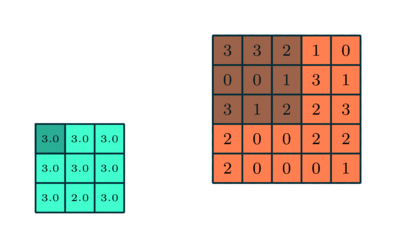

Note
Has 99% accuracy on MNIST
High-Level Concept
Convolution

conv(f,g) = area(t) where t is the shift of g
Layers
kernel/filter, K, feature detector

"The first ConvLayer is responsible for capturing the Low-Level features such as edges, color, gradient orientation" etc."*
stride is how far across and down the filter moves. The default is (1,1)
padding determines whether to artificially expand the image, usually by mirroring the edge pixels, so that the filter starts centered on (0,0) rather than (w/2,w/2). valid padding which drops pixels where filter doesn't fit.
Pooling

max pooling takes the maximum value of the 9 squares average pooling takes the average value of the 9 squares
Fully Connected Layer
Takes the weights of all the previous layers and figures out what to multiply them by to spit out a classification. Two FCs are used for optimization reasons.

Note: convolution is more expensive than matrix math, which is part of why FCs are designed this way
CNN-specific Techniques
When you mixup, you add more samples that are mixes of two samples, like a cat overlaid with a dog at 50% alpha, and the label being (0.5,0.5). This process helps prevent overfitting by essentially making the model more of a probabilistic thinker.
TTA (test-time augmentation) augments the test dataset with flips, etc. It then predicts on those augs and ensembles them